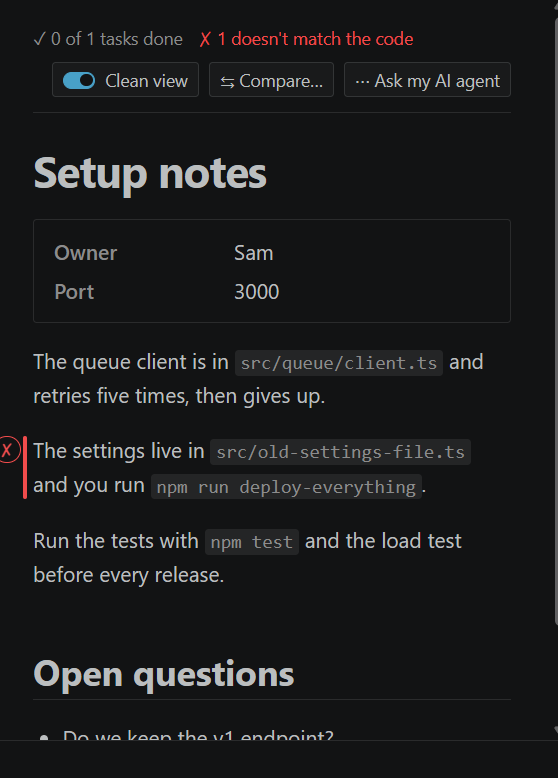
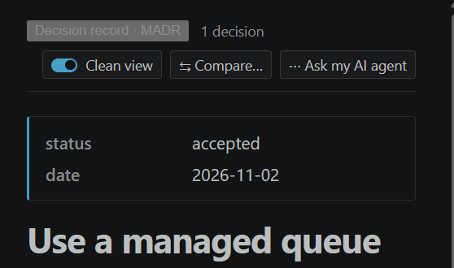

Marks paragraphs you should not trust: they name files or commands that are not in your code, disagree with another doc, or may be out of date.
Helps: anyone about to follow a doc, and anyone who maintains docs.
Where to find it
On the page: a mark in the left margin beside the paragraph, and a count at the top, for example ✗ 1 doesn't match the code. Click the count to jump to the next one.
In the outline: small ✗ badges next to the sections that have one.
In the Docs Inbox: the group Doubtful — check before you trust.
Try it
Add this paragraph to a doc and save: The settings live in `src/old-settings-file.ts` and you run `npm run deploy-everything`.
Open the doc's page (Ctrl+Alt+V).
Hover the red ✗ in the margin to read why.
What you should see

A red ✗ beside the paragraph and “✗ 1 doesn't match the code” at the top. Hover says, for example, that src/old-settings-file.ts is not in the repository.More detail: what each mark means
Mark
Means
✗
It names something that is not in your code: a file, function, command, environment variable or version.
⇄
Another doc says something different (e.g. “Port: 8080” here, “Port: 3000” there).
⚠
A file it names changed after this paragraph was written (needs git).
↺
A newer, almost identical doc exists.
✓
You checked it and marked it true.
Commands are checked against the scripts in your package.json. Everything is checked on your computer.
Record that you checked a paragraph. If the code it names changes later, the mark comes back.
Helps: doc owners and reviewers who want others to know what has been checked.
Where to find it
On the page: click a trust mark in the margin → Mark as verified — it is true, Mark as wrong…, Clear my verdict, or Verify this paragraph against the code (asks your AI agent).
For a paragraph without a mark: hover it and click the faint dot in the margin.
Try it
Open the page from card 1.
Click the red ✗.
Choose Mark as verified — it is true.
What you should see
The ✗ turns into a ✓. If a file the paragraph names changes after that, the warning comes back.
Writes “I approve this version” into the file, and warns everyone when the file changes after that.
Helps: leads and reviewers approving a plan or spec.
Where to find it
On the page: ⋯ Ask my AI agent at the top → Sign off this version…
Your name comes from the setting docmap.myNames (first name), else your git user name.
Try it
Open a doc's page.
Click ⋯ Ask my AI agent → Sign off this version… and confirm your name.
Change a word in the file and save.
What you should see
The file gets a line like signed-off-by: Your Name 2026-11-16 #… at the top, and the page shows ✓ Signed off by Your Name. After your change it says ⚠ Changed since Your Name signed off.
When docmap is sure, the page says what kind of doc it is and which well-known format it follows, for example Decision record · MADR.
Helps: new team members, and teams that want docs in a common shape.
Where to find it
On the page: a small label at the top left, above the buttons.
Try it
Open the page of a decision record, design doc, spec, runbook or architecture doc.
Look at the top left of the page.
Click the label to compare the doc with that format (next card).
What you should see

The label “Decision record · MADR”.More detail: kinds and formats recognised
Kinds: decision record, design doc, feature spec, runbook, architecture doc, design system (DESIGN.md), test plan, postmortem, release notes. Named formats: MADR, Nygard ADR, Google design doc, Rust-style RFC, GitHub Spec Kit, arc42. A doc in another style is never marked wrong, and there is no score.
Lists which parts of a format your doc has. Your team's own format comes first. Your file is never changed.
Helps: authors checking they have not forgotten a section.
Where to find it
On the page: click the doc-kind label (previous card).
Command Palette: All-in-One Markdown Viewer: Compare with a Standard Format…
Try it
Open a decision record.
Run Compare with a Standard Format…
Pick a format, for example MADR.
What you should see
✓ parts the doc has, ○ parts the format expects, – optional parts not used. Read about this format opens its description.More detail: your team's format
Your team's format is its template file (docs/templates/<kind>.md), or else the headings most of its existing docs of that kind share. It is offered before the public formats.